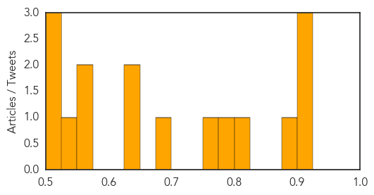
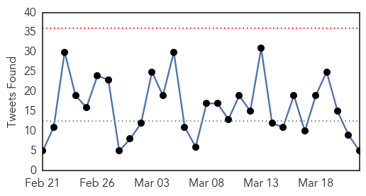
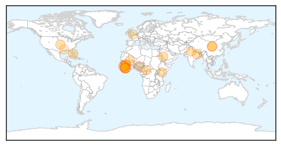
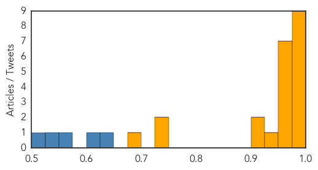

Unknown
30-Day Web Trend
0 alerts, 0 warnings

30-Day Twitter Trend
0 alerts, 0 warnings

Article Locations

Article Confidences
Top Articles:
- 0.917
- Chicago Tribune
- 0.917
- Chicago Tribune
- 0.917
- Chicago Tribune
- 0.886
- Drop in TB cases in Alappuzha
- 0.803
- Indiana takes CDC assistance to tackle HIV menace; 55 cases confirmed
- 0.784
- Medical researcher: Studies, data can prompt improvements in public health
- 0.769
- Dead crows put Sultanpur on avian flu alert
- 0.694
- Effectively fighting chronic diseases
- 0.639
- Somalia marks world Water day amid Water shortage in some part of the country
- 0.627
- Fundraiser For Lyme Disease Treatment
- 0.568
- Cyclone Pam: UNICEF flash alert #4 - Vanuatu
- 0.567
- MoH has ‘right to hire medicos from abroad’
- 0.538
- UN humanitarian chiefs condemn attacks on health facilities in Syria
- 0.514
- Attract and kill: trapping malaria mosquito mums before they lay eggs
- 0.509
- Children with congenital heart disease rising
- 0.504
- Sorry, deze pagina kon niet gevonden worden.
Top Tweets:
-
No tweets found for Mar 22, 2015
Ebola
30-Day Web Trend
0 alerts, 0 warnings

30-Day Twitter Trend
0 alerts, 0 warnings

Article Locations
Article Confidences
Top Articles:
- 1.000
- Emails: UN health agency resisted declaring Ebola emergency
- 1.000
- Health authorities report 3 new Ebola cases in Liberia, previously declared Ebola free
- 0.999
- Liberia Investigates How Latest Ebola Patient Got Infected
- 0.996
- The World Health Organization’s Credibility is in Question due to its Alleged Inability to Issue an Ebola Epidemic Warning on Time
- 0.996
- Timeline of China's anti-Ebola aid in Africa - Xinhua
- 0.992
- Roundup: Timeline of China's anti-Ebola aid in Africa
- 0.992
- Timeline of China's anti-Ebola aid in Africa
- 0.986
- Timeline of China's anti-Ebola aid in Africa
- 0.979
- Locals see Ebola through new eyes
- 0.973
- Sierra Leone’s President Koroma Ordered a Three-day Nationwide Lock-down Against Ebola
- 0.951
- 30,000 elderly havent got pension in East Delhi
- 0.951
- Sanjay Gupta takes break from 'Jazbaa' for son
- 0.951
- NCW concerned over delayed justice in nun gang-rape case
- 0.951
- Airport security in New Orleans shoot terminal attacker
- 0.951
- Hundreds of Indian students and teachers arrested over widespread cheating in exams
- 0.951
- Cameroon Blames CAR for Fresh Attack
- 0.925
- Communicating The Right Message About Ebola
- 0.915
- Nigerian Ebola vaccine to be launched soon – Jonathan
- 0.914
- Stamford's AmeriCares Welcomes Peterson As Senior VP
- 0.745
- Sierra Leoneans halt genital mutilation amid Ebola fears: UK minister
- 0.732
- ‘This is payback time’ – says new vice president of Sierra Leone
- 0.698
- Ebola mission accomplished
Top Tweets:
- 0.952
- Don't Be Complacent About Ebola - Forbes http://t.co/5qomO2eTEE ebola EVD
- 0.885
- Why Not To Be Complacent About Ebola - Forbes http://t.co/DK6df1fu3J ebola EVD
- 0.885
- Ebola containment mission almost finished for Fort Bliss soldiers - KFOX El Paso http://t.co/sVwLTPpoIz ebola EVD
- 0.833
- Return of the Iron Knights: Ebola mission accomplished - Military Times http://t.co/F4UTohlEFL ebola EVD
- 0.808
- Ebola test which spots victims BEFORE they fall ill will be available within a ... - Daily Mail http://t.co/1JFVVpxESr ebola EVD
- 0.766
- Locals see Ebola through new eyes - Arizona Daily Sun http://t.co/qw8ErP8L3p ebola EVD
- 0.743
- RT: New Ebola test detects disease before symptoms http://t.co/bbE1U0Y0t4
- 0.607
- Sending HealthWorkers in Ebola areas with such limited PPEs is not the way to Ebola Zero!! @Make_Safe http://t.co/La5G6wnnep
- 0.582
- RT: Een jaar ebola: vrees voor verslappen aandacht groeit Ebola http://t.co/YDXhMsCA1C http://t.co/CWAMk2XTYE
- 0.580
- RT: Ebola in Sierra Leone: The audit saga continues http://t.co/xYAxmnPM6v
- 0.564
- Ebola outbreak: The world has eased up too soon on the battle with the virus, says professor who helped discover it http://t.co/vHDdR94Q7p